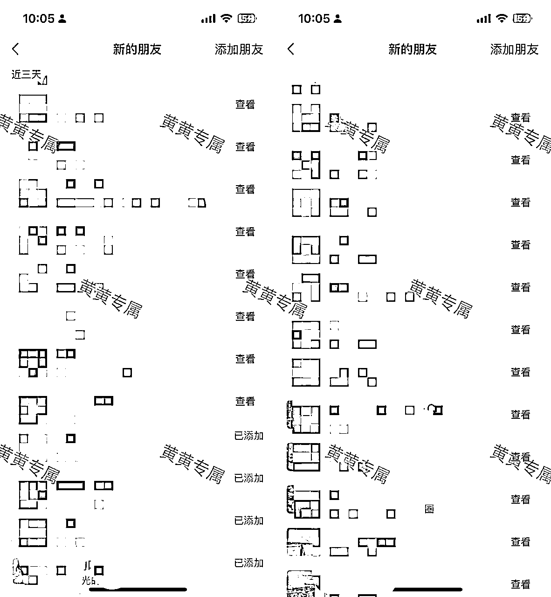
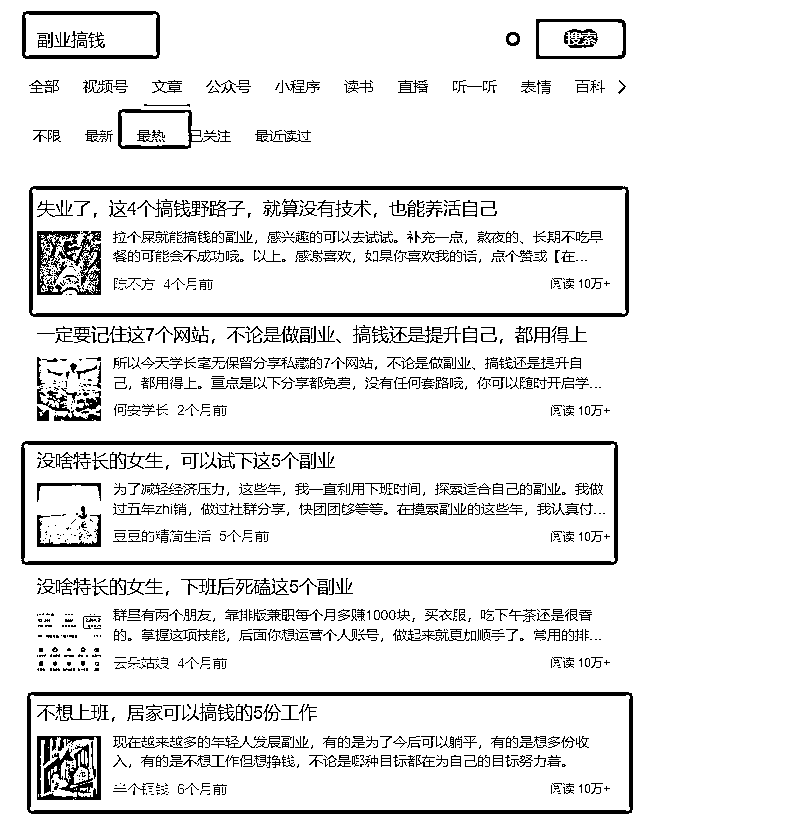
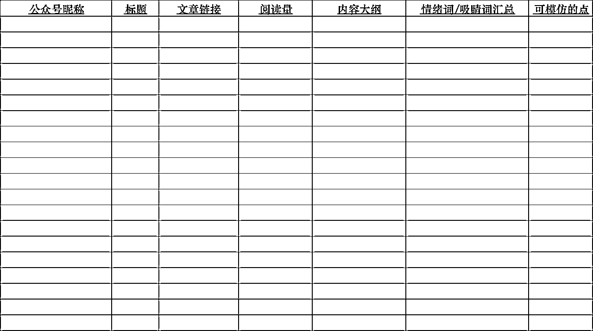
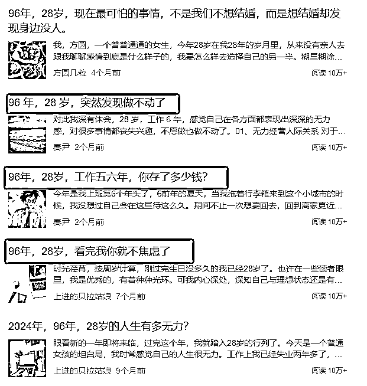
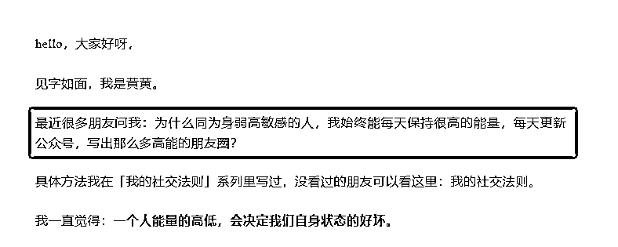
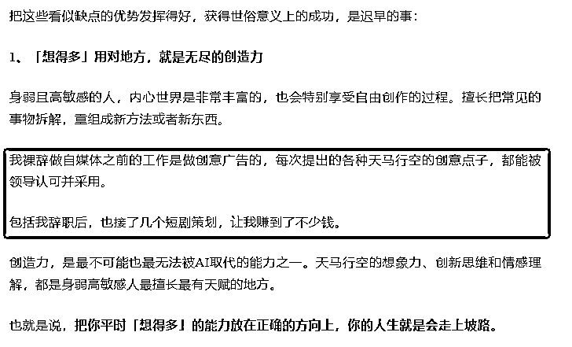
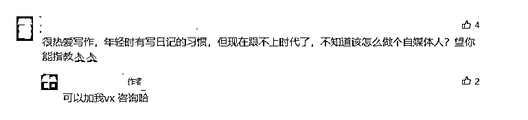

来源：https://v00gv8edzj.feishu.cn/docx/QQ5vdVzP3o5qEBxx9PpcIaj5nBL
生财圈友们好！
我是黄黄，前4A广告公司策划，目前是自由职业者，加入生财一年多以来，看了众多圈友分享的内容以及参加航海项目实战，我有尝试做过得物、小红书、视频号带货等等，让我在探索自媒体初期赚到了一些小钱，但大部分都以失败告终，账号不是被封了，就是踩到某个坑之后没有任何一点流量了。
同时我也意识到公域平台对我这样的小型个体户来说，并不是真正适合长久发展的地方，而我本人也更倾向在私域卖产品。但像得物、小红书、知乎这些平台在引流上相对来说就没有那么丝滑，稍微有一点风吹草动就违规了，深思熟虑之后，我选择「微信公众号」作为下一个流量增长点。
为什么要选择公众号作为下一个流量增长点？主要有3点原因，并且我非常鼓励大家一定要把公众号做起来。
1）公众号早已打破了原有的封闭式推荐模式，实现了全面的流量推荐模式。
以前发文章只有关注的读者才能看到，但现在改变推荐机制后，就算用户没有关注你，也有机会读到你的文章。这对新手来说是一件好事，即使没有粉丝，我们也能通过系统推荐来实现涨粉变现的目的。
2）微信生态下引流相对丝滑，文末可以直接挂二维码、微信号，减少了用户链接你的时间成本，只要扫一扫就能加微信。
3）跟视频号结合起来做，公众号做图文，视频号发视频，对打造个人IP的效果不会差，加上朋友圈运营得好，在微信生态下我们小个体就能活得很好了，一年多赚个几十万完全不是问题。
想清楚了这些点，我在9月初的时候就重启了公众号，刚开始第1篇数据稍微有点差，连续更新3天后，有1篇突然阅读过万了，我就知道属于我的机会来了，一定要接住这一波流量。
所以中秋假期我也坚持更新，连续更了20篇文章之后，收获了上百万的阅读量，流量主收入突破8000+，涨粉1.2万，引流800多人加微信。
截止目前为止，我已经通过公众号引流了2千多人，流量主+私域产品变现5万左右。

虽然我觉得自己这点成绩还不够耀眼，但我的老师张可粒以及生财赛道运营官瓜斯老师鼓励我要勇敢分享，所以我就将这3个月运营个人IP账号的经验做了复盘。
本次复盘贴总结了我从公众号定位-选题思路-内容结构-朋友圈布局的全部经验，分为四个部分来详细拆解我做IP类公众号的思路和经验思考，希望可以给大家在后期运营公众号（个人IP向）提供一些帮助：
1、定位定江山，方向对了，变现没有天花板
2、选题思路，搭建爆款选题库，快速进入流量池
3、建立黄金内容结构，IP类公众号也能篇篇过万阅读
4、朋友圈重布局，持续跟陌生用户产生信任感，促成交
本篇文章中，我将会从以下四个方面给大家详细拆解，我是如何做个人IP方向的爆款内容：
一、定位定江山，方向对了，变现没有天花板
1.1 变现定位：更新内容之前，要先想好自己的变现方式
1.2 人设定位：给别人一个链接你的理由
1.3 人群定位：垂直某类人群，去创作他们爱看的内容
二、选题思路，搭建爆款选题库，快速进入流量池
2.1 针对目标用户，提炼关键词进行搜索
2.2 选题一定要有「情绪词」，这是出爆款的关键
2.3 选题不需要高大上，而是要激发你的「表达欲」
三、建立黄金内容结构，IP类公众号也能篇篇过万阅读
3.1 标题，一定要有「情绪」，吸引用户点击
3.2 开头，跟用户对话，快速拉近彼此距离
3.3 文中一定要不断埋钩子，引导用户加微信
3.4 结尾总结升华，直接放联系方式
3.5 评论区埋钩子，引导用户加微信
3.6 不断测自己账号流量词，持续更新内容
四、朋友圈重布局，持续跟陌生用户产生信任感，促成交
4.1 四大类型朋友圈，帮你迅速打破与陌生用户距离感
关于定位，我在前期也走了不少坑，这个账号从2016年就开始注册了，从开始写日记到后来发书评、影评，一直没有得到什么正反馈，后面就断更了2年。
在9月份之前，我都没有想好怎么变现，加上也没有做好定位，我就懒得更新了，偶尔写一下复盘和个人成长类的内容。
直到一个偶尔的机会，我接触到了一个国学老师并决定跟她学习，我发现国学在个人精神疗愈上的一些方法论还挺有意思。所以我就想把这一点跟写作、跟我个人的经历做结合，重新确定了自己的定位，就是做轻疗愈型的个人IP，也重新定位了个人的变现模式，目前还没有成型的产品，但已经收了近10多个客户的定金。
所以，依据我在公众号定位上的踩坑经历，我给大家总结了3点做定位的经验：
公众号常见的变现方式就几种，如流量主、接广告、私域卖货、知识付费等等。
如果你是想要纯靠爆款内容赚流量主收入，那就选择收益高的赛道就好了，类似民生、职场、情感、故事……
如果你是想通过内容引流用户到微信做私域变现，卖项目、卖课程或者卖产品之类的。不同的变现方式，在内容创作策略上会有非常大的区别。
事关赚钱大业，建议大家在更新内容之前，必须要先想好变现方式。
就我自己来说，在开始更新内容之前，我是非常明确自己要做知识付费的，哪怕后端还没有自己成熟的产品，我可以帮其他IP卖他们的产品，所以我所有的内容都会围绕着精准流量去做，换句话说，我所有能加到微信上来的人，无论他们有没有给我付费，绝大部分都是知道我的业务和目的的。
如何在泛话题下做精准流量，这一点如何做到我会在内容布局板块详细拆解。
为什么要做人设定位？
简单地说，就是为了赚钱，为了更好地变现，更快地拿到结果。
我们做内容、做账号都不可能是为爱发电，知道自己靠什么赚钱，赚哪些人的钱还不够。还要知道你是谁，你能给别人带来什么样的价值？
无论是个体创业者、实体店老板，还是普通上班族、宝妈，当你选择以公众号为载体来传播自己、沉淀粉丝时，就必须要有一个清晰的个人定位。
你是谁？你能为别人提供什么产品或者服务？你的优势是什么？
把这几个问题梳理清楚，给别人一个链接你的理由。
比如，我是一个很会通过内容搞流量的人，我可以帮助实体店主或者缺流量的个体、公司搞流量，我的优势是深耕内容多年，知道哪种类型内容可以获取更精准的流量，在这方面积累了丰富的经验。
当然，很多人可能对自己的优势和擅长点是不够清晰的，也没有自己的产品，那我建议可以深耕个人成长或者副业搞钱方向，比如读书/写作副业、朋友圈美学这些细分领域。
为什么选择这些领域呢？理由很简单，就是距离变现更近，用户对于赚钱的需求更强。
很多人在人群定位上都会犯一个错误，就是想把所有人都框到自己的目标用户里面，上到75岁大爷大妈，下到18岁青年，最终导致内容做得非常乱。
其实我们只要针对自己想做某一部分人人群的生意去针对她们的痛点写内容就好了。
比如我框定的目标用户就是高敏感、在职场上内耗、不想上班的20-45岁岁的人群，这类人群的付费意识和付费能力相对更高，成交会更丝滑。
所以，想做好IP类的公众号，人群定位是非常有必要的，只有明确了自己的目标人群，找到他们遇到的困境/问题，再针对这些问题不断写解决方案，你就可以吸引到很多人来加微信。
我的选题库搭建流程非常简单，就是大量刷内容，遇到自己能写的、符合账号定位或者能改编的选题，统统扔到「文件传输助手」里面去，找个时间再整理一下就好了。
这里分享一下我日常找选题的思路：
比如你是做副业赛道的，目标用户就是想做副业、想搞钱的人，就可以去收集各类关于副业的关键词。
类似「副业搞钱」「不上班」等关键词，在公众号、微博、小红书、知乎等平台上依次搜索，会出现非常多的内容，把那些爆款的标题、内容摘录下来，等到写内容的时候，用1个或者多个关键词组合成标题，80%能出爆款。

我拆解过大量的公众号后发现，大部分能够成为爆款的内容，她们的标题里都有加入了情绪词。
比如真心建议、替大家试过了、我发现、大实话、终于明白、告诉大家一件事、突然意识到……
正常来说，高阅读量的内容选题和标题，都能提供一个重要的信息点，那就是情绪价值。
如果我们的内容里，既有干货又有情绪价值，两者结合起来，阅读量不会差的。
做个人IP类爆款内容跟流量主最大的不同，就是你找的选题能不能激发自己的表达欲，有想写的欲望你才会用心去写，也才能让用户感受到你的真诚，才能通过文字了解。
我能大量引流客资以及在流量来之后可以快速成交，最核心的一点就是我找的选题让我很有表达欲的同时也狠狠击中了用户的痛点。
所以，我们在找选题的时候，一定要在爆款的基础上，看看自己是否对这件事很有话说以及是否能跟自己后端的产品做结合。
按照以上方法收藏到一批文章之后，接下来我们就要去建立一份专属自己的爆款选题库了。
大家一定要自行动手去做一个选题库，不要偷懒，只有自己动手去做印象才深刻，表格模版如下图，从左往右以此记录公众号昵称、标题、文章链接、阅读量、内容大纲、情绪词/吸睛词汇总等信息。

一篇文章用户会不会点开看，除了选题之外，标题就是第二大衡量标准。
做个人IP类的账号在标题上一定要下狠功夫，你的标题一定要击中目标用户的情绪点，要么戳中痛点，要么戳中爽点、痒点。
我之前写「高敏感人」系列内容的时候，几乎每一篇都有「高敏感」这个主题关键词，同时我会加入一些情绪词。
类似「天选好命、大福气、搞钱圣体」等情绪词，直戳用户的爽点，就能增加文章的打开率。
包括还有很多爆款标题是XX岁不上班，看完我你就不焦虑了；不上班也能赚钱的10份工作之类的。
不难发现，大部分的爆款标题都是带有情绪的，悲伤的、愤怒的、不满的、沮丧的都有，标题越情绪化阅读量越高。

所以，大家在写标题的时候，尽可能根据自己的定位和目标人群，写符合她们情绪的标题。
很多人开头喜欢引用名人名言，类似莫言说、余华说、古人说之类的。如果你是个人IP类的公众号，我劝大家尽量不要用名人名言开头，或者说少用。
而是应该像两个朋友见面聊天一样，先寒暄几句，比如最近有不少朋友问我XXX，或者写一下你这篇的文章的缘由，都会比直接怼干货或者名言要好得多，也有利于拉近你和用户的关系，打造人设。

也可以直接在开头的时候直接展示你的成果或承接标题。
比如你的标题写「做自媒体3个月，变现了5万+」，那开头就可以直接说：如题，你没有看错，作为一个新手入门自媒体，3个月的时间……
还有，如果要引流到微信，在开头部分就可以埋钩子了，展示成绩的时候就可以带出一部分你的产品，如想知道我是如何3个月变现XX的吗？我写一份入门指南，需要的朋友可以找我安排之类的话术。
我文章的中间部分，大部分都会用自己的个人经历，这样有利于更加真诚地植入自己的人设，让自己的形象变得立体。
当然，如果你本身没有那么多经历可以写，也可以适当引用书中或者网上的案例，适当加入金句，中间部分就会变得丰满了。
但我个人建议每个分论点的论据用个人经历比较好，方便埋钩子引流。
像我自己就经常写不上班，写作赚钱的经历，写的次数多了，就会给用户一个心锚，更容易被别人记住。

文章的开头决定了用户要不要继续阅读你的文章，而结尾决定了用户给不给你点赞、转发。
所以在结尾的时候，要学会升华全文，强化主体，尽可能的正能量。
引用一句经典的句子作为结尾，然后表达自己的美好的祝福，同时呢引导用户跟你链接和互动。大家也可以根据自己的风格去写一句结尾话术，有利于引流和打造你的个人IP，但千万别跟其他人的一模一样，要有自己的风格。
前面的流程走完，一篇文章的基础工作基本上就走完了。
如果出现了爆款或者数据还不错，想要吸引到更多人来加你微信，那就可以挑一些不错的评论来回复。
或者有人直接问你怎么办的时候，就能回复对方你的微信，并且把评论置顶，这样你的内容不断跑流量，评论区也能吸收到很多精准流量。

做个人IP类的账号，一定要多测自己账号的爆款流量词。
可以简单理解为，你在发布的内容里，有没有哪个词是只要出现，就出爆款的。
比如有个读书账号，她的标题只要出现[一定要大量读书]、[一定要大量记录]这个词的时候，她内容的阅读量就非常高，这个词就是她账号的流量词。
再比如，有的账号是专门写MBTI的，标题里只要有infp、intj、写给INFP之类的词，就很容易出爆款。
所以，我们一定要不断去测属于自己账号的流量词，基本上如果你原本的账号流量都在几十左右，突然某天有一篇突破几百、几千了。
就可以去找这篇文章的流量词，下一篇在标题和文章再植入这个流量词，还能维持不错的阅读，那就根据这个思路持续更新内容就好了。
很多朋友或许会疑惑，我在讲公众号爆款写作，为什么会需要讲到朋友圈布局？
其实我见过非常多爆文号的号主是依靠平台流量赚取收益的，这样的收入渠道是比较单一，而且大部分能在流量主项目赚到钱的人，基本上都同时运营5-10个不同赛道的公众号。
这对我们绝大多数小小伙伴来说并不是一件容易的事，万一哪天账号被踢出流量池了，收入也就断了。
很多号主也意识到了这一点，但却不知道如何改变现状，开拓第二收入曲线。
最好的方式就是你要去搭建自己的后端产品体系，就像我前面讲到我做公众号就是为了引流私域卖产品的，而且这是大部分想做个人IP都会用变现形式。
有产品、有内容、有流量，那我们接下来是不是就得解决如何把产品卖出去的问题？
朋友圈就是卖产品的关键，它能快速拉近我们跟陌生用户的距离感，进一步建立信任感。
我们是很难遇到光看文章就付费的神仙用户，基本上从加好友到给你付费还有一段很长的路要走，朋友圈就是建立信任感的桥梁。
因此，哪怕你目前还没有自己的产品，也一定要做好朋友圈布局，可以多发一些生活圈和价值圈。
基本上当用户主动来加你了，那就表示她们对你这个人还是非常感兴趣的，这时候一定要在朋友圈多曝光自己。当我们能跟用户建立起信任感之后，将来再去销售产品时，就不会显得那么被动。
以我自己举例，我基本上每天会发5条左右朋友圈，大部分为以下几类朋友圈：
生活类型的朋友圈是比较好发的，分享日常、吃喝玩乐、喜怒哀乐、人生观、价值观等跟自己业务无关的真实的自己，要做一个有生活气息的人。
这类型的朋友圈最好每一天都发一条，一定要有这个。不然都是广告圈或者营销类的朋友圈内容，很容易让别人觉得太营销了，别人就会把你屏蔽了。
自己学习和实操得到的账号运营干货，自己在做账号过程中的喜怒哀乐，不仅仅是涨粉变现，还可以体现在时间自由、旅行自由等等隐形好处。当然，学习成长还可以是读书、学习新技能、参加线下课、跟大V学习之类的，只要是跟学习成长相关的都可以发。
产品类型的朋友圈是一定要发的，因为用户加到你的微信，一定会去翻你的朋友圈，所以你一定要有相关的服务或者产品类的朋友圈，方便别人能更快的了解到你，给你付费。
但我自己发产品类型的朋友圈是相对少的，基本上一天只会发1-2条，如果你的维信好友人比较多，产品圈的比例可以适当多发一点。如果人数比较少，就注重在生活圈、价值观类的朋友圈上布局。
分享工作时的图片或者简短的文字，展示你日常的工作态度和自己的专业性，文案一定要真情实感，能极快拉近跟陌生客户的距离。
总之，在朋友圈布局上的整体思路就是迅速拉近跟陌生用户的距离，就像我们跟别人第一次见面都会讲自我介绍一样，真诚、全方位的展示你自己。
说实话，做自媒体、做IP，我们能赚多少钱，本质上还是你对自己的开发有多少，你有多了解自己，然后把自己变成产品、变成内容，卖给你的目标用户，这样就够了。
很多朋友看到这里还是觉得有点担心，觉得自己没有什么优势，写作能力也不强，对于做IP这件事还是心里没底。黄黄给大家总结了写IP类爆款文章的7个步骤，听话照做，你要么涨粉，要么赚钱。
如果实在不知道怎么做定位，可以按照这个公式来：你喜欢什么+擅长什么+赚钱的方向。
比如我：喜欢写作，擅长写爆款文章和图文账号运营，我可以变现的方向就是接广/知识付费等。
再比如可粒，喜欢研究自媒体商业变现，擅长个人IP孵化和打造，她的变现方式就比较多元了，粉丝基数大能接广告，有影响力在产品销售也有巨大优势。
很多人一直盲目写内容，而忽略赚钱的方向，或者说账号没有对应的付费人群，接不到广告，比如分享书单、纪录片电影这些，就会吸引到很多白嫖党。
一般情况下，如果不是做热点类的公众号，搭建选题库可以帮助我们有源源不断的写作素材，每周花1-2小时的时间整理近期爆款选题，一次整理10-15天甚至一个月的内容出来，更新起来就很方便，也不会有断更焦虑。
图文类的账号，标题一定要激发用户好奇心，也要让别人一眼就能看懂你的文章标题。
一些能引起好奇的句式：
建议XX，我发现XXX，千万别XXX……
当然在标题上也可以适当制造反差，比如敏感内耗，但月入过万之类的标题句式。
很多人写文章要么自嗨只聊自己，要么全篇专业技能枯燥无比，一般都是不涨粉、数据差。
所以想有高阅读量，文章内容一定要干湿结合，自己的经历/故事+干货分享，这两者相互融合，经历里面有干货，干货里有自己的真实的经历，你的人设就会变得非常丰满、立体。
一篇好的文章有人设、有干货是远远不够的，还要学会给内容做总结、金句以及呼吁行动的方法论。
如果你的内容是为了引流到私域的，一定要学会在每个能秀肌肉的地方，秀出自己的实力，引导用户加你微信或者给他们一个关注你、给你付费的理由。
一篇好的内容不是发出去、加到人就结束了，还是要聚焦到变现上。
朋友圈作为天然的广告位，一定要做好朋友圈的布局，比如生活圈、认知圈、产品圈都要发，每天至少发3-5条朋友圈，在用户刷存在感，拉近彼此的关系。
总之，一篇能爆能赚钱的文章，一定会符合7个标准：
你的标题有没有让用户有点击的欲望？
你的内容有没有结合自身经历真诚地分享？
你的干货有没有实际解决用户的问题？
全文有没有留下你的产品、服务？
内容里有没有引导用户关注、收藏转发，有没有引流的动作？
有没有用金句升华全文，引发用户的情感共鸣？
引流后有没有发见面礼，朋友圈有没有做好布局？
以上就是我做公众号的一些经验和心得分享了，最后再跟大家说一些我的心里话：
1、做自媒体，有一颗长期主义的心很重要，如果决定要做公众号，请不要数据焦虑和轻易放弃，先坚持更新100篇再说
2、做公众号之前，请先梳理好自己的定位、内容形式以及变现方式，不要盲目开始，更不要眉毛胡子一把抓，最后越做越焦虑。
3、圈子的力量真的很强大，感谢2年前我遇到了张可粒，也感谢她带着我进入生财这个平台，被生财这样一个超高能量场的地方滋养着，让我在自由职业的路上才越走越远，越赚越多，也希望未来有机会和大家一起进步，共同成长，快乐搞钱哦~